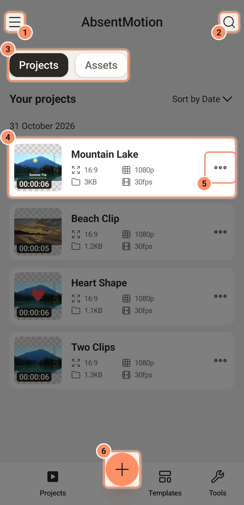
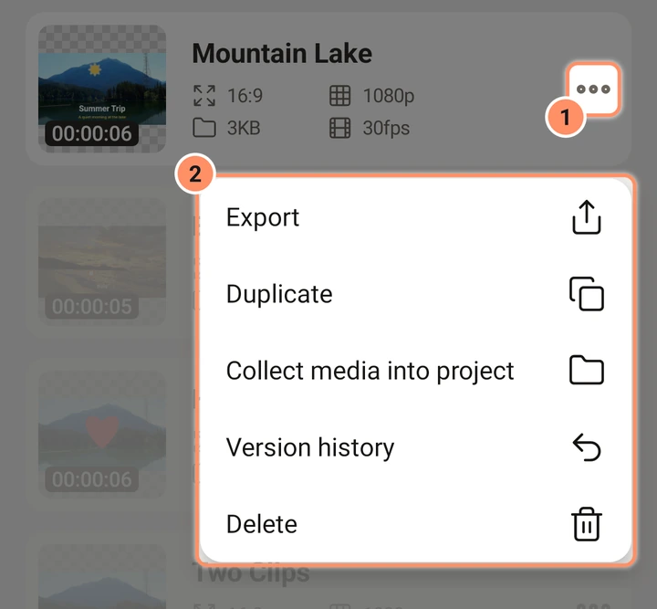
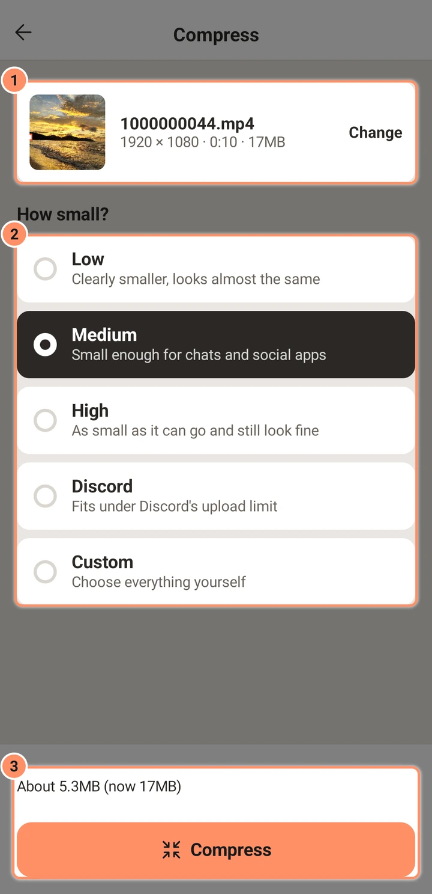
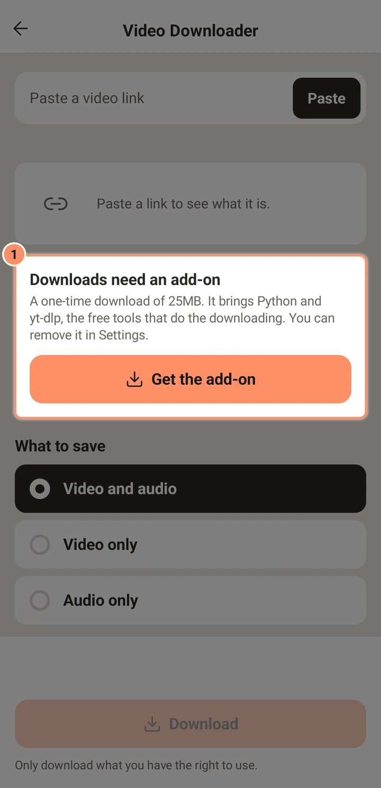
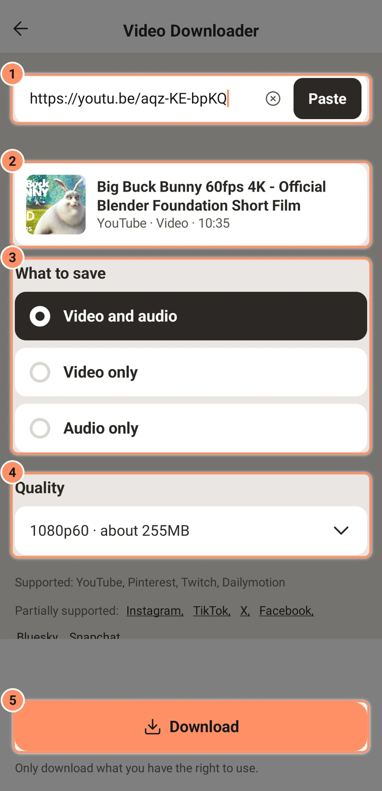

الشاشة الرئيسية
مشاريعك وأصولك وقوالبك، وأداتا الضغط وتنزيل الفيديو، والأزرار المحيطة بها.
في هذه الصفحة
الشاشة الرئيسية هي أول ما تراه بعد بدء التشغيل الأول. تعرض قائمة مشاريعك وفيها أزرار إنشاء مشروع والبحث وتغيير الإعدادات.

الشريط العلوي
- زر القائمة (أعلى اليسار، ثلاثة أسطر). يفتح درج الإعدادات.
- AbsentMotion في الوسط.
- بحث (العدسة المكبرة على اليمين). يفتح حقل بحث. أثناء البحث يظهر في المكان نفسه X لإغلاقه، وزر الرجوع يغلقه أيضًا.
الشريط السفلي
- المشاريع والقوالب والأدوات تبدّل بين صفحات الشاشة الرئيسية الثلاث.
- الزر الدائري + بينهما ينشئ مشروعًا جديدًا: انظر إنشاء مشروع.
المشاريع والأصول
تحتوي صفحة المشاريع على شريحتين في الأعلى، المشاريع والأصول.
- المشاريع هي فيديوهاتك ورسومك المتحركة. اضغط على بطاقة لفتحها في المحرر.
- الأصول هي قطع قابلة لإعادة الاستخدام حفظتها من مشروع أو أنشأتها بخيار ASSET في ورقة المشروع الجديد. تضيفها إلى مشاريع أخرى من المحرر. انظر الأصول والقوالب والإعدادات المسبقة.
يُخزَّن المشروع والأصل بالطريقة نفسها؛ لكنهما يُدرجان في قائمتين منفصلتين فقط.
ما تعرضه البطاقة
لكل بطاقة صورة مصغرة مع مدة المشروع في الزاوية، والاسم، وسطران من الحقائق: نسبة العرض إلى الارتفاع (مثل 16:9) والدقة (مثل 1080p)، ثم حجم الملف ومعدل الإطارات. حجم الملف هو حجم ملف المشروع نفسه. لا يشمل الصور والفيديوهات والصوت التي يستخدمها المشروع، لذا قد يُظهر مشروع يحوي ساعات من الفيديو بضعة كيلوبايتات فقط.
الصورة المصغرة لقطة ثابتة تُؤخذ عند إغلاق المحرر، في الموضع الذي كان فيه رأس التشغيل. قد يُظهر مشروع لم تفتحه قط في المحرر صورة مصغرة فارغة.
قائمة البطاقة
زر النقاط الثلاث على البطاقة (اسمه المزيد) يحتوي هذه الإدخالات.
- تصدير يفتح شاشة التصدير مباشرة من القائمة. تستخدم خيارات "الإطار الحالي" الإطار الأول. هذا هو المكان الوحيد أيضًا الذي يوفّر تصدير XML. انظر تصدير.
- تكرار (تكرار الأصل للأصل) ينشئ نسخة باسم "اسم Copy"، مع وسائطها.
- جمع الوسائط في المشروع ينسخ كل ملف يستخدمه المشروع من خارج مجلده إلى المشروع، بحيث لا يعتمد بعد ذلك على معرضك. انظر المشاريع والنسخ الاحتياطي والاستيراد.
- سجل الإصدارات يعرض إصدارات سابقة من المشروع ويتيح لك الرجوع إلى أحدها.
- حذف (حذف الأصل) يطلب التأكيد ثم يحذف المشروع وإصداراته ونسخ الوسائط التي لا يستخدمها أحد غيره. لا توجد سلة محذوفات: لا يمكن استرجاع مشروع محذوف، لذا أنشئ نسخة احتياطية أولًا إن كنت غير متأكد.

المشروع الذي تلف ملفه يعرض تالف — استعد إصدارًا بدلًا من حقائقه. اضغط عليه لاستعادة إصدار سابق، أو لحذفه.
البحث
يخدم مربع بحث واحد الشاشة الرئيسية بأكملها. في صفحة المشاريع يبحث في أسماء المشاريع والأصول ("ابحث في المشاريع والأصول")؛ وفي صفحة القوالب يبحث في القوالب والإعدادات المسبقة. يتجاهل الأحرف الكبيرة والعلامات التشكيلية، ويجب أن تظهر كل كلمة تكتبها في الاسم، بأي ترتيب.
الفرز
في قائمتي المشاريع والأصول يعرض الترويسة فرز حسب التاريخ أو فرز حسب الاسم. اضغط عليها للتبديل. التاريخ يضع الأحدث أولًا، مجمّعًا تحت عناوين التواريخ. الاسم يفرز من A إلى Z. يتذكر التطبيق اختيارك.
القوالب
تحتوي صفحة القوالب على شريحتين، قوالبي وإعداداتي المسبقة. هما موصوفتان في الأصول والقوالب والإعدادات المسبقة.
الأدوات
تحتوي صفحة الأدوات على بطاقتين تعملان على الملفات خارج أي مشروع: ضغط ومنزّل الفيديو. اضغط على بطاقة لفتحها.

ضغط
يصنع ضغط نسخة أصغر من فيديو أو صورة، مثلًا لإرسالها في محادثة. لا يتغير الأصل أبدًا.
- اضغط على اختر فيديو أو صورة واختر الملف من منتقي الصور. يختار تغيير ملفًا آخر.
- تحت ما مقدار التصغير؟ اختر منخفض (أصغر بوضوح مع مظهر شبه مطابق) أو متوسط (الافتراضي: صغير بما يكفي للمحادثات وتطبيقات التواصل) أو مرتفع (أصغر حجم ممكن مع مظهر جيد) أو Discord أو مخصص. يناسب Discord حد الرفع في Discord ويسأل عن الحد: مجاني (20 MB) أو Nitro Basic (50 MB) أو Nitro (1 GB).
- السطر فوق الزر يعرض الحجم المتوقع، مثل "نحو 12 MB (الآن 80 MB)". ويذكر أيضًا إذا كان الملف صغيرًا أصلًا أو أطول من أن يناسب حدًا للحجم.
- اضغط على ضغط. يعرض شريط التقدم، ويوقف إلغاء العملية. تبقى الشاشة قيد التشغيل أثناء العمل.

يتيح لك مخصص اختيار كل شيء بنفسك:
| الإعداد | الخيارات |
|---|---|
| الحجم | فيديو: الأصل أو 1080p أو 720p أو 480p. صورة: الأصل أو 2048 أو 1280 أو 800 px |
| الجودة | الأفضل أو جيد أو صغير أو الأصغر؛ أو استهدف حجم ملف ثم اكتب الحجم بوحدة MB |
| معدل الإطارات | للفيديو فقط: الأصل أو 60 أو 30 أو 24 |
| الصوت | للفيديو فقط: إيقاف أو صغير أو جيد أو الأفضل |
| الصيغة | للصور فقط: JPEG أو WebP |
عند الانتهاء، يعرض السطر فوق الأزرار الحجم القديم والجديد ومقدار ما صغر الملف، مثل "17MB → 5.5MB (أصغر بنسبة 66%)". إذا لم يصغر، يقول ذلك ويقترح الاحتفاظ بالأصل. تحت النتيجة، يبدّل الزران الصغيران بعد وقبل المعاينة بين الملف الجديد والأصل، ويفتح الزر في أعلى يمين المعاينة عرض ملء الشاشة بالزرين نفسيهما. اضغط على حفظ في المعرض للاحتفاظ بالملف الجديد (الفيديو في Movies/AbsentMotion والصور في Pictures/AbsentMotion) أو مشاركة لإرساله إلى تطبيق آخر.


منزّل الفيديو
يحفظ منزّل الفيديو فيديو من رابط على هاتفك. يحتاج إلى إضافة مجانية، وهي تنزيل لمرة واحدة تعرض الشاشة حجمه (حوالي 25 MB). تجلب الإضافة أداتين مفتوحتي المصدر هما Python وyt-dlp، ويمكنك إزالتها مجددًا في الإعدادات بالضغط على حذف إضافة تنزيل الفيديو. تعمل على الهواتف ذات المعالج 64 بت.

- في المرة الأولى، اضغط على تنزيل الإضافة في البطاقة التي تقول "التنزيلات تتطلب إضافة".
- انسخ رابط فيديو من تطبيق آخر، ثم اضغط على لصق (أو اكتب الرابط في الحقل؛ يمسحه X). يتحقق التطبيق من الرابط ويعرض عنوانه وصورة صغيرة ونوعه، مثل "YouTube · فيديو · 10:35".
- تحت ما الذي تريد حفظه اختر فيديو وصوت أو فيديو فقط أو صوت فقط.
- تحت الجودة اختر إحدى الجودات المتوفرة للفيديو. تعرض كل واحدة حجمها، مثل "1080p60 · حوالي 255MB". المنشور الذي يضم صورًا فقط لا يحتاج إلى اختيار: تُحفظ صوره كما هي.
- اضغط على تنزيل. عند الانتهاء تذكر الرسالة مكان الملف، مثل "حُفظ في Movies/AbsentMotion"، ويظهر زران: يفتح مشروع جديد مشروعًا جديدًا فيه الفيديو، ويفتح ضغط أداة الضغط مع الملف.


أسفل الزر، يسرد المدعوم المواقع التي تعمل، ومدعوم جزئيًا المواقع التي تعمل بحدود. اضغط على اسم هناك لقراءة الحد، مثلًا أن قصص Instagram والمنشورات الخاصة تتطلب حسابًا مسجّل الدخول، لذا لا يمكن تنزيلها. يعرض الرابط الذي لا يمكن تنزيله السبب: فيديو خاص أو محذوف، أو منشور يتطلب حسابًا مسجّل الدخول، أو قائمة تشغيل، أو موقع حجب التنزيل، أو عدم وجود اتصال.
نزّل فقط ما تملك حق استخدامه: تكرر الشاشة هذا تحت الزر.
استيراد ملف مشروع
افتراضيًا لا تحتوي الشاشة الرئيسية على زر استيراد. يمكنك فتح ملف مشروع من تطبيق آخر (مدير ملفات، رسالة) عبر مشاركة أو فتح باستخدام، فيأخذه التطبيق. إن كنت تفضّل زرًا، فشغّل إظهار بطاقة الاستيراد في قائمة المشاريع في الإعدادات؛ فتظهر بطاقة فيها اختيار ملف في أعلى قائمة المشاريع. انظر المشاريع والنسخ الاحتياطي والاستيراد.
عندما يكون هناك خطأ ما
- إذا أُغلق التطبيق بشكل غير متوقع، يعرض بدء التشغيل التالي أُغلق AbsentMotion بشكل غير متوقع مع السبب، وإن كانت هناك تعديلات غير محفوظة، عرضًا لاستعادتها.
- سجلات الأعطال في الإعدادات تحت سجلات الأعطال.
- للإصدار القديم، يمكن للتطبيق إخبارك بإصدار أحدث: انظر الإعدادات.